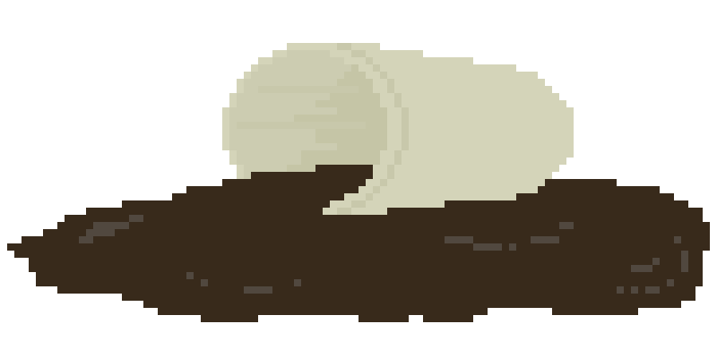

Stained Glass Light Catcher, Jupiter
Made in a crafts class I took in high-school. The first time I used a soldering iron!

Jun Fukamachi Second Phase, Painted
This is the piece that actually got me started in album cover painting! I enjoyed the aesthetic but couldn't afford to/wasn't into collecting records. Absolute banger of an album - would highly recommend!

Arataka Reigen Poster, Painted
From the series Mob Psycho 100! Had a 2 year gap inbetween sketching it and painting it... before I brought my paints to school with me these types of gaps were not uncommon.

Random Access Memories, Painted
This album was done during undergrad! Unknown before now - I chose this album for two reasons. Surprisingly, it's not because it's my favorite (that'd have to be Discovery). I knew I needed tone and underpainting practice for a current wip and the slight difference in the blacks of Thomas' and Guy-Man's masks were incredibly nice for that. The second being that I struggled with painting letters - still not my favorite tbh.
Majora's Mask Pixel Art
After making a couple sprites for extra content in my group game dev project, I kinda fell in love with making pixel art. Made this as my first non class related piece. (Just like the rest of the pixel art and icons on this website!)

cube exterior

interior unlined

interior lined
Musiks Cube, C2C Crochet
For this bag, my goal was to have something that fit my car's center console and was easy to take in and out of the house - so I added a lining and bottom piece for support. The rest of this page is going to detail the process for any interested crocheters.
Yarn Weight: Worsted (I used Acrylic) Hook: US H (500 mm)
Start by making the six panels. Each sub cube side consists of a 3x3 c2c crochet square - if you want to make a solved cube, you can make a solid 9x9 square and stich the seams on after, like I did.
On each panel, you're going to want to use the surface slip stich pattern to create a tic-tac-toe pattern. For the embroidering route, you'll want to use the chain stitch. (For scrambled cube - joining the squares in black by sc through the layers - ridge facing up) Then, using black - do 1 round of sc around each of the panels ~120 if you do 3 sc per c2c square and each corner.
The sides can then be joined however for the actual bag construction - I like using the mattress stitch but it really depends on what vibe you want to go for! For the top embroidery part I tried to replicate the "rubik's" but as "musik's" (for the CDs ba-dum-tssshh). Not great at embroidering letters on crochet so I don't have any tips. (sorry lol)
The lining was sewn into a box and then joined to the rim of the opening and lid with some spare rings sandwiched in between. To get bottom support I cut a sqare from a lettuce tub and put it between the crochet and lining layers. There is definatley room for a zipper or other closing mechanism, I opted to leave it off for now.

Monthly Girl's Nozaki Kun, A Funny Scene
Probably one of my all-time favorite series! I wanted to do a scene from this show, and although there were many contenders, I felt like this moment captured its vibe the best!

Howl's Face Took So Long, Painted
Legitimately took as long as the rest of the painting I had to redo it so many times.

Painted @ Alyssa's & ACMW, A Series
One of the best party ideas (that I immediatley started using myself) was to have a second quieter activity room, in this case painting, away from the main event. The largest and smaller three were all done at the same party!
The second mountain was from an ACMW Bob Ross painting social. Haven't had the opportunity to talk much about them on this site otherwise - and given this was meant to incorporate the things that made me fall in love with my CS degree - I can't not mention them! Without ACMW I don't know if I would have made it through my undergrad. Words cannot express how much my time there has impacted me :)

Knit Sweater Vest
This pattern was whispered to me by the yarn like it was the green goblin mask. I heeded the call and got a banging sweater vest.

MTG Tokens

Treasure Token
Painted MTG Tokens
Made some custom tokens for my proxied commander deck! (Nethroi, Apex of Death) I like having the smaller size so I can keep my zones from getting too card heavy.

Saiki K, Snacking
First anime styled painting I did!

Tangerine Hair Scarf, Crochet & Embroidery
Made a tangerine themed granny sqare head scarf. (can really be any of the orange adjacent fruits)

Infant SunStalker from Kingdom Death Monster, Crochet
This was a gift/comission for a cousin. The rainbow vomit can be stuffed in the stomach with plenty of left over room to use for dice storage!


{kind=link}
{kind=link}